Qué trae cada alfa
Cube Unbound sale por partes: cada alfa añade criaturas, objetos y sistemas nuevos. Aquí está lo que trae cada una, sacado directamente de los archivos del juego: lo que ya puedes jugar y lo que viene.
Alfa 0.1 Alfa 0.1
Ya disponible: descárgala gratis. 304 criaturas · 811 objetos
Criaturas
 Abeja
Abeja Abzu el Devorador de Corrientes
Abzu el Devorador de Corrientes Aethelgard el Dragón Cósmico del Éter
Aethelgard el Dragón Cósmico del Éter Alce
Alce Alce Corniplata
Alce Corniplata Aldeana elfa
Aldeana elfa Aldeana sylva
Aldeana sylva Aldeano avian
Aldeano avian Aldeano enano
Aldeano enano Aldeano frogman
Aldeano frogman Aldeano humano
Aldeano humano Anguila Eléctrica Titánica
Anguila Eléctrica Titánica Ankhor el Corazón del Manto
Ankhor el Corazón del Manto Araña Tejedora Gigante
Araña Tejedora Gigante Ardilla
Ardilla Armadillo de Placas Metálicas
Armadillo de Placas Metálicas Arponero tritón
Arponero tritón Arquero esquelético
Arquero esquelético Arquero Óseo de Tiro Rápido
Arquero Óseo de Tiro Rápido Autómata ballestero
Autómata ballestero Autómata baluarte
Autómata baluarte Autómata de cristal
Autómata de cristal Autómata llave
Autómata llave Avestruz
Avestruz Bakunawa la Serpiente Lunar
Bakunawa la Serpiente Lunar Ballestero de sangre
Ballestero de sangre Ballestero explorador
Ballestero explorador Bandido acorazado
Bandido acorazado Bandido arquero
Bandido arquero Bandido matón
Bandido matón Basilisco Escamarrápida
Basilisco Escamarrápida Basilisco de Terracota
Basilisco de Terracota Bruja de las mareas
Bruja de las mareas Brujo bandido
Brujo bandido Buey almizclero
Buey almizclero Buitre leonado
Buitre leonado Bégimo de la Podredumbre
Bégimo de la Podredumbre Búho Sabio Astral
Búho Sabio Astral Búho real
Búho real Caballero Negro Desalmado
Caballero Negro Desalmado Caballito de Mar Guardián
Caballito de Mar Guardián Caballo
Caballo Caballo Espectral
Caballo Espectral Cabecilla bandido
Cabecilla bandido Cabra de Cuernos Espirales
Cabra de Cuernos Espirales Cabra montesa
Cabra montesa Calamar Colosal de Ojo Dorado
Calamar Colosal de Ojo Dorado Camaleón Gigante de Copa
Camaleón Gigante de Copa Camello de Doble Joroba Nevado
Camello de Doble Joroba Nevado Cangrejo
Cangrejo Cangrejo Araña Gigante
Cangrejo Araña Gigante Capataz kobold
Capataz kobold Capibara
Capibara Capitán Esquelético Torvald
Capitán Esquelético Torvald Capitán Fantasma Van Der Meer
Capitán Fantasma Van Der Meer Capitán de la Orden
Capitán de la Orden Capitán no-muerto
Capitán no-muerto Carillón el Guardián de las Campanas
Carillón el Guardián de las Campanas Castor
Castor Cebra
Cebra Cerbatanero lagarto
Cerbatanero lagarto Cerdaloth el Glotón
Cerdaloth el Glotón Chamán del pantano
Chamán del pantano Chamán ogro
Chamán ogro Ciempiés de Caverna Titánico
Ciempiés de Caverna Titánico Cieno Ácido de Cloaca
Cieno Ácido de Cloaca Ciervo
Ciervo Ciervo Real Cornicastaño
Ciervo Real Cornicastaño Ciervo Volador Esmeralda
Ciervo Volador Esmeralda Ciervo de la Niebla
Ciervo de la Niebla Cocodrilo
Cocodrilo Cocodrilo Emperador de los Pantanos
Cocodrilo Emperador de los Pantanos Coloso de Basalto Vulcanus
Coloso de Basalto Vulcanus Conejo
Conejo Contramaestre ahogado
Contramaestre ahogado Cronos el Titán Olvidado
Cronos el Titán Olvidado Cthulhu Menor de las Sombras
Cthulhu Menor de las Sombras Cuervo
Cuervo Cultista sangriento
Cultista sangriento Cóndor de las Alturas
Cóndor de las Alturas Delfín Manchado
Delfín Manchado Devorador de Cadáveres
Devorador de Cadáveres Dingo Salvaje de las Dunas
Dingo Salvaje de las Dunas Djinn de Arena y Viento
Djinn de Arena y Viento Draco de Ceniza
Draco de Ceniza Dromedario
Dromedario Dromedario de Carga
Dromedario de Carga Druida de la Orden
Druida de la Orden Duende acuchillador
Duende acuchillador Duende cerbatanero
Duende cerbatanero El Behemoth Abisal de Magma y Vacío
El Behemoth Abisal de Magma y Vacío El Capataz Kobold Griknash
El Capataz Kobold Griknash El Demiurgo del Origen
El Demiurgo del Origen El Forjador Mecánico de Mithril
El Forjador Mecánico de Mithril El Gólem del Origen Tectónico (Guardián de la Piedra Alfa)
El Gólem del Origen Tectónico (Guardián de la Piedra Alfa) El Kraken del Génesis (La Mente del Océano Primordial)
El Kraken del Génesis (La Mente del Océano Primordial) El Leviatán Ciego del Abismo
El Leviatán Ciego del Abismo El Nigromante de Azufre Mor'Kath
El Nigromante de Azufre Mor'Kath El Rey Enano de Hierro Autómata
El Rey Enano de Hierro Autómata El Segador de Escarcha Estigia
El Segador de Escarcha Estigia Elefante
Elefante Elemental de Hielo Escarchado
Elemental de Hielo Escarchado Elemental de Llama Viva
Elemental de Llama Viva Elemental de Tormenta
Elemental de Tormenta Ent Ancestral del Bosque
Ent Ancestral del Bosque Erizo
Erizo Escarabajo Hércules Titán
Escarabajo Hércules Titán Escarabajo ciervo
Escarabajo ciervo Escarabajo rinoceronte
Escarabajo rinoceronte Escila la Morena de las Bodegas
Escila la Morena de las Bodegas Escorpión
Escorpión Escorpión Emperador de Jade
Escorpión Emperador de Jade Escorpión gigante
Escorpión gigante Escudero explorador
Escudero explorador Esfinge de los Espejismos
Esfinge de los Espejismos Espectro Devorador Astral
Espectro Devorador Astral Espectro de Fuego Fatuo
Espectro de Fuego Fatuo Espíritu Enfadado / Banshee
Espíritu Enfadado / Banshee Esqueleto Guardián de Cripta
Esqueleto Guardián de Cripta Esqueleto de la horda
Esqueleto de la horda Excavadora de Vapor Abandonada
Excavadora de Vapor Abandonada Explorador de vanguardia
Explorador de vanguardia Faraón Inmortal Akhen'Sun
Faraón Inmortal Akhen'Sun Foca
Foca Fénec
Fénec Fénix Astral
Fénix Astral Gacela
Gacela Garza real
Garza real Gaviota
Gaviota Geomante kobold
Geomante kobold Gnoll acechador
Gnoll acechador Gnoll alfa
Gnoll alfa Gnoll rompehuesos
Gnoll rompehuesos Gnoll saqueador
Gnoll saqueador Golem de Arcilla Guardián
Golem de Arcilla Guardián Golem de Cristal Resonante
Golem de Cristal Resonante Golem de Vidrio Refractario
Golem de Vidrio Refractario Gorgona del Vitriolo Esmeralda
Gorgona del Vitriolo Esmeralda Gorila
Gorila Gorila Espalda de Hierro
Gorila Espalda de Hierro Gran cresta
Gran cresta Grifo de las Cumbres
Grifo de las Cumbres Guacamayo
Guacamayo Guardián de Obsidiana
Guardián de Obsidiana Guardián de caparazón
Guardián de caparazón Guardián de concha
Guardián de concha Guardián de hierro
Guardián de hierro Guerrero lagarto
Guerrero lagarto Gárgola Alada de Piedra
Gárgola Alada de Piedra Gólem Supervisor de Hematita
Gólem Supervisor de Hematita Gólem Titán de Magnetita y Roca
Gólem Titán de Magnetita y Roca Gólem de Hematita
Gólem de Hematita Heraldo de Malakor
Heraldo de Malakor Hiena
Hiena Hiena Carroñera de las Sombras
Hiena Carroñera de las Sombras Hipogrifo del Bosque
Hipogrifo del Bosque Hipopótamo
Hipopótamo Hormiga
Hormiga Horror del Vacío Dimensional
Horror del Vacío Dimensional Hrimfaxi el Mamut de Hielo Fósil
Hrimfaxi el Mamut de Hielo Fósil Huargo de Batalla
Huargo de Batalla Ictiosaurio de los Corales
Ictiosaurio de los Corales Ignis el Dragón de Basalto
Ignis el Dragón de Basalto Imitador de Cofre / Mimic
Imitador de Cofre / Mimic Isópodo Acorazado Gigante
Isópodo Acorazado Gigante Jabalí
Jabalí Jabalí Colmillos de Bronce
Jabalí Colmillos de Bronce Jaguar
Jaguar Jefe ogro
Jefe ogro Jirafa
Jirafa Karkinos el Acorazado
Karkinos el Acorazado Karybdis la Reina del Maelstrom
Karybdis la Reina del Maelstrom Kharra la Gran Sacerdotisa de la Sangre de Hierro
Kharra la Gran Sacerdotisa de la Sangre de Hierro Khepri el Devorador de Sol
Khepri el Devorador de Sol Kobold dinamitero
Kobold dinamitero Kobold entibador
Kobold entibador Kobold minero
Kobold minero Kukulcán el Devorador de Jade
Kukulcán el Devorador de Jade La Matriarca Gorgona de Coral
La Matriarca Gorgona de Coral Lagarto de Lava
Lagarto de Lava Leona
Leona Leopardo de las Nubes
Leopardo de las Nubes Leopardo de las nieves
Leopardo de las nieves Leviatán Acorazado Juvenil
Leviatán Acorazado Juvenil León
León Libélula
Libélula Liebre
Liebre Lince
Lince Lobo
Lobo Luciérnaga
Luciérnaga Lupus Umbralis
Lupus Umbralis Malakor el Señor de Sangre de Hierro
Malakor el Señor de Sangre de Hierro Mamut Lanudo Patriarca
Mamut Lanudo Patriarca Mamut lanudo
Mamut lanudo Manta Raya Gigante
Manta Raya Gigante Manticora del Peñasco
Manticora del Peñasco Mantícora Carmesí
Mantícora Carmesí Mariposa
Mariposa Mariquita
Mariquita Marmota
Marmota Medusa Bioluminiscente
Medusa Bioluminiscente Momia Faraónica Ancestral
Momia Faraónica Ancestral Mono capuchino
Mono capuchino Morena Gigante de Grieta
Morena Gigante de Grieta Morrigan la Castellana de la Bastilla
Morrigan la Castellana de la Bastilla Murciélago
Murciélago Murciélago Vampiro Gigante
Murciélago Vampiro Gigante Mycelion el Devorador de Mentes
Mycelion el Devorador de Mentes Nautilo de Concha Espiral
Nautilo de Concha Espiral Nautiloth el Amonites Colosal
Nautiloth el Amonites Colosal Nigromante de Túnica Rota
Nigromante de Túnica Rota Nigromante de hueso
Nigromante de hueso Nihil el Engendro del Vórtice
Nihil el Engendro del Vórtice Nimbaroth el Coloso de Aerolita
Nimbaroth el Coloso de Aerolita Nox el Señor del Ocaso
Nox el Señor del Ocaso Nutria Gigante de Río
Nutria Gigante de Río Ogro lanzarrocas
Ogro lanzarrocas Ogro machacador
Ogro machacador Ogro muralla
Ogro muralla Ojo Flotante Vigía
Ojo Flotante Vigía Ondina del Naufragio
Ondina del Naufragio Oráculo de Amatista Resonante
Oráculo de Amatista Resonante Oso
Oso Oso Acorazado Polar
Oso Acorazado Polar Ouroboros el Devorador del Manto
Ouroboros el Devorador del Manto Oveja
Oveja Panda Guardián de Piedra
Panda Guardián de Piedra Panda gigante
Panda gigante Pangolín de Escamas de Cristal
Pangolín de Escamas de Cristal Pelícano
Pelícano Perezoso Gigante Megaterio
Perezoso Gigante Megaterio Pez Espada Plateado
Pez Espada Plateado Pez Globo Espinoso Gigante
Pez Globo Espinoso Gigante Pez Linterna del Abismo
Pez Linterna del Abismo Pez Sierra de los Manglares
Pez Sierra de los Manglares Pingüino emperador
Pingüino emperador Pirata esquelético
Pirata esquelético Plesiosaurio Ancestral
Plesiosaurio Ancestral Poseidón de Oricalco (El Coloso Sumergido)
Poseidón de Oricalco (El Coloso Sumergido) Pájaro Roc Gigante
Pájaro Roc Gigante Pájaro carpintero
Pájaro carpintero Quelonia del Fango
Quelonia del Fango Quimera Marina Fantasma
Quimera Marina Fantasma Raijin el Tamborilero de la Tormenta
Raijin el Tamborilero de la Tormenta Rana
Rana Reno
Reno Rex Dracónico Primordial
Rex Dracónico Primordial Rey Tritón el Tirano de las Mareas
Rey Tritón el Tirano de las Mareas Rey tritón corrupto
Rey tritón corrupto Rinoceronte
Rinoceronte Rinoceronte Colosal
Rinoceronte Colosal Ronin Sombrío Jin
Ronin Sombrío Jin Sacerdote de sangre
Sacerdote de sangre Sacerdotisa de la marea
Sacerdotisa de la marea Salamandra Gigante de Cueva
Salamandra Gigante de Cueva Sepia Camaleónica
Sepia Camaleónica Serafín del Firmamento
Serafín del Firmamento Serpiente Cascabel de Fuego
Serpiente Cascabel de Fuego Señor de la Cripta Esquelético
Señor de la Cripta Esquelético Señor de la forja
Señor de la forja Silvano Sombrío
Silvano Sombrío Slime
Slime Sol'Zul el Espejo Ígneo
Sol'Zul el Espejo Ígneo Sombra Viviente
Sombra Viviente Suricata
Suricata Surtr el Forjador del Núcleo
Surtr el Forjador del Núcleo Tapir de Agua Acorazado
Tapir de Agua Acorazado Tejón
Tejón Tezcatl el Jaguar de Obsidiana
Tezcatl el Jaguar de Obsidiana Thor'Kael el Soberano del Relámpago
Thor'Kael el Soberano del Relámpago Tiburón Blanco Costero
Tiburón Blanco Costero Tiburón Martillo de Arrecife
Tiburón Martillo de Arrecife Tigre
Tigre Tigre Dientes de Sable
Tigre Dientes de Sable Tirador fantasma
Tirador fantasma Titán de Magma y Basalto
Titán de Magma y Basalto Tortuga
Tortuga Tortuga Mordedora Prehistórica
Tortuga Mordedora Prehistórica Tritón corrupto
Tritón corrupto Tucán
Tucán Typhon el Coloso de Sulfurita
Typhon el Coloso de Sulfurita Ursoblasto
Ursoblasto Vaca
Vaca Varano
Varano Verdugo de las Cadenas
Verdugo de las Cadenas Vespis Regia
Vespis Regia Vidente gnoll
Vidente gnoll Vorgrath el Dracolich de Adamantio
Vorgrath el Dracolich de Adamantio Vritra la Sierpe de Gravitón
Vritra la Sierpe de Gravitón Wendigo de las Ventiscas
Wendigo de las Ventiscas Yak
Yak Yeti de las Ventiscas
Yeti de las Ventiscas Ymir el Jötunn de Escarcha
Ymir el Jötunn de Escarcha Zephyros el Titán de las Alturas
Zephyros el Titán de las Alturas Ziz de los Vendavales
Ziz de los Vendavales Zombi de la Peste
Zombi de la Peste Zorro
Zorro Zorro Sombrío
Zorro Sombrío [JEFE] Dragón de Obsidiana Milenario
[JEFE] Dragón de Obsidiana Milenario [JEFE] El Heraldo del Borde del Mundo
[JEFE] El Heraldo del Borde del Mundo [JEFE] Hidra Tóxica de Siete Cabezas
[JEFE] Hidra Tóxica de Siete Cabezas [JEFE] Lusca, el Tiburón-Pulpo de las Fosas
[JEFE] Lusca, el Tiburón-Pulpo de las Fosas [JEFE] Titán de Hueso Primigenio
[JEFE] Titán de Hueso Primigenio Águila real
Águila realObjetos
 Aceite impermeable
Aceite impermeable Aciano
Aciano Acículas de pino
Acículas de pino Adamantio carmesí
Adamantio carmesí Adobe
Adobe Adoquín
Adoquín Aerolita
Aerolita Aguijón Real de Vespis
Aguijón Real de Vespis Aguijón de Manticora
Aguijón de Manticora Ajo Blanco
Ajo Blanco Ala Delta de Madera y Lona
Ala Delta de Madera y Lona Alabarda de Fulgurita y Tormentita
Alabarda de Fulgurita y Tormentita Alabarda de Jade Ancestral
Alabarda de Jade Ancestral Alabarda del Relámpago Celeste
Alabarda del Relámpago Celeste Alas Corruptas del Abismo
Alas Corruptas del Abismo Alas de Aerolita Gravitatoria
Alas de Aerolita Gravitatoria Alas de Cuero y Costillas de Hierro
Alas de Cuero y Costillas de Hierro Alas de Dragón Carmesí
Alas de Dragón Carmesí Alas de Gravitón Puro y Polvo Astral
Alas de Gravitón Puro y Polvo Astral Alas de Membrana y Cobre Ligero
Alas de Membrana y Cobre Ligero Alas de Mithril y Céfiro
Alas de Mithril y Céfiro Alas de Mithril y Plumas de Fénix
Alas de Mithril y Plumas de Fénix Alas de Nácar Marino
Alas de Nácar Marino Alas de Nácar y Seda Marina
Alas de Nácar y Seda Marina Alas de Oricalco del Arcángel Mayor
Alas de Oricalco del Arcángel Mayor Alas de Seda Selvática y Titanio
Alas de Seda Selvática y Titanio Alas de la Aurora del Génesis
Alas de la Aurora del Génesis Alas de la Marea del Leviatán
Alas de la Marea del Leviatán Alas de la Marea del Leviatán
Alas de la Marea del Leviatán Alas de tela
Alas de tela Alas del Arcángel
Alas del Arcángel Alas del Dragón
Alas del Dragón Alas del Vuelo Infinito de Gravitón
Alas del Vuelo Infinito de Gravitón Alas Ígneas
Alas Ígneas Alas Ígneas de Basalto
Alas Ígneas de Basalto Aletas de Nado Rápido
Aletas de Nado Rápido Aletas de Nácar de las Mareas
Aletas de Nácar de las Mareas Alga marina
Alga marina Altar de la Creación
Altar de la Creación Amatista Resonante Perfecta
Amatista Resonante Perfecta Amatista resonante
Amatista resonante Amuleto de Branquias de Coral
Amuleto de Branquias de Coral Amuleto de Cristal Espejismo
Amuleto de Cristal Espejismo Amuleto de Esmeralda
Amuleto de Esmeralda Amuleto de Jade Imperial
Amuleto de Jade Imperial Amuleto de Plata Purificada
Amuleto de Plata Purificada Amuleto de Regeneración Rápida
Amuleto de Regeneración Rápida Amuleto de cristal
Amuleto de cristal Amuleto de la Perla del Leviatán
Amuleto de la Perla del Leviatán Amuleto del Prisma Solar
Amuleto del Prisma Solar Anguila Corrosiva de Vitriolo
Anguila Corrosiva de Vitriolo Anguila Corrosiva de Vitriolo a la Brasa
Anguila Corrosiva de Vitriolo a la Brasa Anguila de Azufre
Anguila de Azufre Anguila de Azufre a la Brasa
Anguila de Azufre a la Brasa Anguila del Vórtice del Vacío
Anguila del Vórtice del Vacío Anguila del Vórtice del Vacío a la Brasa
Anguila del Vórtice del Vacío a la Brasa Anillo de Coral Refinado
Anillo de Coral Refinado Anillo de Cristal Espejismo
Anillo de Cristal Espejismo Anillo de Cristal de Sombra
Anillo de Cristal de Sombra Anillo de Cuarzo Lechoso
Anillo de Cuarzo Lechoso… y 751 más en Todos los objetos (filtra por alfa).
Alfa 0.2 Alfa 0.2 · 14 oct
Sale el 14 de octubre. 6 criaturas · 45 objetos
Criaturas
 Guardia de la ciudad
Guardia de la ciudad Roc, el Águila de las Tormentas
Roc, el Águila de las Tormentas Scolopendra del Abismo Arenoso
Scolopendra del Abismo Arenoso Skoll, el Lobo de Escarcha Ancestral
Skoll, el Lobo de Escarcha Ancestral Ursa Major, el Oso Ancestral del Robledal
Ursa Major, el Oso Ancestral del Robledal Vulkanor, el Dragón de Fuego Primigenio
Vulkanor, el Dragón de Fuego PrimigenioObjetos
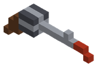
Aguijón Magnum .44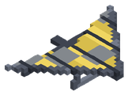
Alas de Roc Arenisca Tallada
Arenisca Tallada Basalto Pulido
Basalto Pulido Bengala
Bengala Bolsa de Minerales
Bolsa de Minerales Bolsa de Minerales Reforzada
Bolsa de Minerales Reforzada Capa de Piel Titánica
Capa de Piel Titánica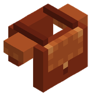
Caparazón Blindado de Scolopendra Carne Marinada Alfa
Carne Marinada Alfa Celosía de Bambú
Celosía de Bambú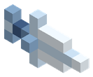
Colmillo Glacial de Skoll Columna Enana Labrada
Columna Enana Labrada Cuarzo Astral
Cuarzo Astral Cubito de Acero
Cubito de Acero Cubito de Hierro
Cubito de Hierro Cubito de Madera
Cubito de Madera Cubito de Oro
Cubito de Oro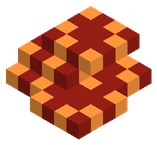
Escamas de Dragón Ígneo Espíritu de Fuego
Espíritu de Fuego Espíritu de Hielo
Espíritu de Hielo Espíritu de Veneno
Espíritu de Veneno Espíritu de Viento
Espíritu de Viento Granito Pulido
Granito Pulido Ladrillo de Caliza
Ladrillo de Caliza Ladrillo de Magma
Ladrillo de Magma Linterna Frontal del Enano
Linterna Frontal del Enano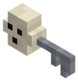
Llave de calavera Losa de Adamanto
Losa de Adamanto Mochila Reforzada de Hierro
Mochila Reforzada de Hierro Mochila Rúnica de Titanio
Mochila Rúnica de Titanio Mochila Titánica de Adamantio
Mochila Titánica de Adamantio Mochila de Cuero
Mochila de Cuero Mochila del Éter Cósmico
Mochila del Éter Cósmico Mochila Élfica de Mithril
Mochila Élfica de Mithril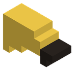
Pico Sagrado de Caza Piel Titánica de Ursa
Piel Titánica de Ursa Raíl
Raíl Reja de Latón
Reja de Latón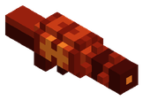
Rifle Cañón de Vulkanor Tablones de Abedul
Tablones de Abedul Tablones de Mangle
Tablones de Mangle Tarro de Miel Primordial
Tarro de Miel Primordial Tejas de Pizarra
Tejas de Pizarra Viga de Cobalto
Viga de CobaltoAlfa 0.3 Próximamente · Alfa 0.3
Próximamente. 1 criatura · 218 objetos
Criaturas

Objetos
 Abrigo Acolchado
Abrigo Acolchado Abrigo de Papá Noel
Abrigo de Papá Noel Alas de Mariposa
Alas de Mariposa Ariete de Tronco Acorazado
Ariete de Tronco Acorazado Bajos de Túnica de Mago
Bajos de Túnica de Mago Balista Móvil de Precisión
Balista Móvil de Precisión Bata de Alquimista
Bata de Alquimista Bermudas Playeras
Bermudas Playeras Blusa de la Vendimia
Blusa de la Vendimia Boina de Otoño
Boina de Otoño Bola de Muñeco de Nieve
Bola de Muñeco de Nieve Botas Blandas de Pícaro
Botas Blandas de Pícaro Botas de Alquimista
Botas de Alquimista Botas de Astronauta
Botas de Astronauta Botas de Combate
Botas de Combate Botas de Espantapájaros
Botas de Espantapájaros Botas de Esqueleto
Botas de Esqueleto Botas de Goma
Botas de Goma Botas de Granjero
Botas de Granjero Botas de Herrero
Botas de Herrero Botas de Malla Templarias
Botas de Malla Templarias Botas de Nieve
Botas de Nieve Botas de Nieve Forradas
Botas de Nieve Forradas Botas de Otoño
Botas de Otoño Botas de Papá Noel
Botas de Papá Noel Botas de Pelo de Bárbaro
Botas de Pelo de Bárbaro Botas de Pirata
Botas de Pirata Botas de Seguridad
Botas de Seguridad Botas de Vaquero
Botas de Vaquero Bufanda Ninja
Bufanda Ninja Bufanda de Lana
Bufanda de Lana Cabeza de Galleta de Jengibre
Cabeza de Galleta de Jengibre Cabeza de Muñeco de Nieve
Cabeza de Muñeco de Nieve Calabaza Tallada
Calabaza Tallada Calzas de Bardo
Calzas de Bardo Calzones de Pirata
Calzones de Pirata Camisa Hawaiana
Camisa Hawaiana Camisa Rota de Hombre Lobo
Camisa Rota de Hombre Lobo Camisa de Espantapájaros
Camisa de Espantapájaros Camisa de Esqueleto
Camisa de Esqueleto Camiseta de Zombi
Camiseta de Zombi Capa Corta de Pícaro
Capa Corta de Pícaro Capa Rasgada del Caballero Negro
Capa Rasgada del Caballero Negro Capa Templaria
Capa Templaria Capa de Mago
Capa de Mago Capa de Vampiro
Capa de Vampiro Capucha Ninja
Capucha Ninja Capucha de Conejo
Capucha de Conejo Capucha de Dragón Verde
Capucha de Dragón Verde Capucha de Hombre Lobo
Capucha de Hombre Lobo Capucha de Pícaro
Capucha de Pícaro Capucha de Reno
Capucha de Reno Casaca Pirata
Casaca Pirata Casco de Astronauta
Casco de Astronauta Casco de Minero de Gala
Casco de Minero de Gala Casco de Superviviente
Casco de Superviviente Catapulta de Torsión Pesada
Catapulta de Torsión Pesada Chal de Gasa Zafiro
Chal de Gasa Zafiro Chaleco Táctico
Chaleco Táctico Chaleco de Pícaro
Chaleco de Pícaro Chaleco de Reno
Chaleco de Reno Chaleco de Vaquero
Chaleco de Vaquero Chanclas
Chanclas Chaparreras de Vaquero
Chaparreras de Vaquero Chaquetilla de Cocinero
Chaquetilla de Cocinero Chistera de Novio
Chistera de Novio Chubasquero de Pescador
Chubasquero de Pescador Cinta de Monje
Cinta de Monje Coraza Dorada de Gala
Coraza Dorada de Gala Coraza del Caballero Negro
Coraza del Caballero Negro Corona Real
Corona Real Corona de Druida
Corona de Druida Corona de Flores
Corona de Flores Corona de la Vendimia
Corona de la Vendimia Corpiño de Novia
Corpiño de Novia Correajes de Bárbaro
Correajes de Bárbaro Corsé de Gala Carmesí
Corsé de Gala Carmesí Cuerpo de Galleta de Jengibre
Cuerpo de Galleta de Jengibre Cuerpo de Muñeco de Nieve
Cuerpo de Muñeco de Nieve Delantal de Herrero
Delantal de Herrero Diadema de Hada
Diadema de Hada Diadema de Zafiro
Diadema de Zafiro Dō de Samurái
Dō de Samurái Escarcelas del Caballero Negro
Escarcelas del Caballero Negro Escarpes Dorados de Gala
Escarpes Dorados de Gala Escarpes del Caballero Negro
Escarpes del Caballero Negro Falda Sirena Zafiro
Falda Sirena Zafiro Falda de Bruja
Falda de Bruja Falda de Gala Carmesí
Falda de Gala Carmesí Falda de Novia
Falda de Novia Falda de Primavera
Falda de Primavera Falda de Pétalos
Falda de Pétalos Falda de Verano Floral
Falda de Verano Floral Falda de la Vendimia
Falda de la Vendimia Faldar Dorado de Gala
Faldar Dorado de Gala Faldar Real
Faldar Real Faldar Templario
Faldar Templario Faldar de Dragón Verde
Faldar de Dragón Verde Faldar de Gladiador
Faldar de Gladiador Faldar de Hojas de Druida
Faldar de Hojas de Druida Frac de Novio
Frac de Novio Frac de Vampiro
Frac de Vampiro Gafas de Alquimista
Gafas de Alquimista Galea de Gladiador
Galea de Gladiador Gi Ninja
Gi Ninja Gorro Playero
Gorro Playero Gorro de Bardo
Gorro de Bardo Gorro de Cocinero
Gorro de Cocinero Gorro de Elfo Navideño
Gorro de Elfo Navideño Gorro de Lana
Gorro de Lana Gorro de Papá Noel
Gorro de Papá Noel Gran Yelmo Templario
Gran Yelmo Templario Grebas de Gladiador
Grebas de Gladiador Hakama del Guerrero del Este
Hakama del Guerrero del Este Hombrera de Gladiador
Hombrera de Gladiador Jersey de Otoño
Jersey de Otoño Jubón de Bardo
Jubón de Bardo Kabuto de Samurái
Kabuto de Samurái Kusazuri de Samurái
Kusazuri de Samurái Laúd a la Espalda
Laúd a la Espalda Manto de Armiño
Manto de Armiño Medias de Elfo Navideño
Medias de Elfo Navideño Mono de Minero de Gala
Mono de Minero de Gala Mortero de Asedio Goblin
Mortero de Asedio Goblin Máscara de Calavera
Máscara de Calavera Máscara de Zombi
Máscara de Zombi Pamela de Primavera
Pamela de Primavera Pantalón Cargo
Pantalón Cargo Pantalón Ninja
Pantalón Ninja Pantalón Roto de Hombre Lobo
Pantalón Roto de Hombre Lobo Pantalón de Alquimista
Pantalón de Alquimista Pantalón de Astronauta
Pantalón de Astronauta Pantalón de Cocinero
Pantalón de Cocinero Pantalón de Espantapájaros
Pantalón de Espantapájaros Pantalón de Esqueleto
Pantalón de Esqueleto Pantalón de Esquí
Pantalón de Esquí Pantalón de Herrero
Pantalón de Herrero Pantalón de Minero de Gala
Pantalón de Minero de Gala Pantalón de Monje
Pantalón de Monje Pantalón de Novio
Pantalón de Novio Pantalón de Pana
Pantalón de Pana Pantalón de Papá Noel
Pantalón de Papá Noel Pantalón de Pijama de Conejo
Pantalón de Pijama de Conejo Pantalón de Pícaro
Pantalón de Pícaro Pantalón de Reno
Pantalón de Reno Pantalón de Vampiro
Pantalón de Vampiro Pantalón de Zombi
Pantalón de Zombi Pantuflas de Conejo
Pantuflas de Conejo Pantuflas de Fantasma
Pantuflas de Fantasma Patas de Dragón Verde
Patas de Dragón Verde Pañuelo de Herrero
Pañuelo de Herrero Peluca de Vampiro
Peluca de Vampiro Peto de Aguas
Peto de Aguas Peto de Dragón Verde
Peto de Dragón Verde Peto de Granjero
Peto de Granjero Pezuñas de Reno
Pezuñas de Reno Piernas de Galleta de Jengibre
Piernas de Galleta de Jengibre Pies de Galleta de Jengibre
Pies de Galleta de Jengibre Pies de Zombi
Pies de Zombi Pijama de Conejo
Pijama de Conejo Poncho de Vaquero
Poncho de Vaquero Saco de Regalos
Saco de Regalos Sandalias de Corteza
Sandalias de Corteza Sandalias de Monje
Sandalias de Monje Sandalias de Paja
Sandalias de Paja Sandalias de Primavera
Sandalias de Primavera Sandalias de Verano
Sandalias de Verano Sobreveste Templaria
Sobreveste Templaria Sombrero Cónico de Paja
Sombrero Cónico de Paja Sombrero de Bruja
Sombrero de Bruja Sombrero de Granjero
Sombrero de Granjero Sombrero de Mago
Sombrero de Mago Sombrero de Vaquero
Sombrero de Vaquero Sueste de Pescador
Sueste de Pescador Suneate de Samurái
Suneate de Samurái Sábana de Fantasma
Sábana de Fantasma Sábana de Fantasma (bajo)
Sábana de Fantasma (bajo) Sábana de Fantasma (cuerpo)
Sábana de Fantasma (cuerpo) Tabi Ninja
Tabi Ninja Tacones Carmesí
Tacones Carmesí Tacones de Plata
Tacones de Plata Taparrabos de Bárbaro
Taparrabos de Bárbaro Tiara con Velo de Novia
Tiara con Velo de Novia Tocado de Rosa Carmesí
Tocado de Rosa Carmesí Traje de Astronauta
Traje de Astronauta Tricornio Pirata
Tricornio Pirata Túnica Real
Túnica Real Túnica de Bruja
Túnica de Bruja Túnica de Druida
Túnica de Druida Túnica de Elfo Navideño
Túnica de Elfo Navideño Túnica de Mago
Túnica de Mago Túnica de Monje
Túnica de Monje Túnica de Seda Carmesí
Túnica de Seda Carmesí Vaqueros de Granjero
Vaqueros de Granjero Velo de Cola de Novia
Velo de Cola de Novia Vendas de Momia (cabeza)
Vendas de Momia (cabeza) Vendas de Momia (piernas)
Vendas de Momia (piernas) Vendas de Momia (pies)
Vendas de Momia (pies) Vendas de Momia (torso)
Vendas de Momia (torso) Vestido de Hada
Vestido de Hada Vestido de Noche Zafiro
Vestido de Noche Zafiro Vestido de Primavera
Vestido de Primavera Vestido de Verano Floral
Vestido de Verano Floral Yelmo Alado de Gala
Yelmo Alado de Gala Yelmo Cornudo del Caballero Negro
Yelmo Cornudo del Caballero Negro Yelmo de Bárbaro
Yelmo de Bárbaro Zapatillas Reales
Zapatillas Reales Zapatillas de Hada
Zapatillas de Hada Zapatos de Bardo
Zapatos de Bardo Zapatos de Bruja
Zapatos de Bruja Zapatos de Charol
Zapatos de Charol Zapatos de Elfo Navideño
Zapatos de Elfo Navideño Zapatos de Mago
Zapatos de Mago Zapatos de Novia
Zapatos de Novia Zapatos de Vampiro
Zapatos de Vampiro Zarpas de Hombre Lobo
Zarpas de Hombre Lobo Zuecos de Cocinero
Zuecos de Cocinero Zuecos de la Vendimia
Zuecos de la VendimiaAlfa 0.4 Próximamente · Alfa 0.4
Próximamente. 7 criaturas · 73 objetos
Criaturas
 El Guardián de la Singularidad
El Guardián de la Singularidad Faraón Inmortal Kharmesis
Faraón Inmortal Kharmesis Gólem de Granito y Hierro Forjado
Gólem de Granito y Hierro Forjado Leviatán de la Ciénaga Esmeralda
Leviatán de la Ciénaga Esmeralda Morghul, el Nigromante de la Cripta
Morghul, el Nigromante de la Cripta Reina Viuda Ácida de la Fosa
Reina Viuda Ácida de la Fosa Rey Yeti del Permafrost
Rey Yeti del PermafrostObjetos
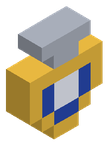
Amuleto del Defensor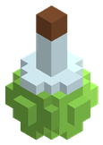
Antídoto Purificante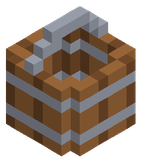
Balde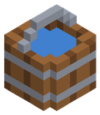
Balde de Agua Botas de Aleación Gravitacional
Botas de Aleación Gravitacional Botas de Electrum Solar
Botas de Electrum Solar Botas de Mithril de Escarcha
Botas de Mithril de Escarcha Botas de Plata Astral
Botas de Plata Astral Botas de Termo-Oricalco
Botas de Termo-Oricalco Botas de Titano-Obsidiana
Botas de Titano-Obsidiana Botas de Éter Cinético Resonante
Botas de Éter Cinético Resonante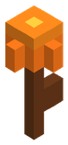
Cardo de Fuego Casco de Aleación Gravitacional
Casco de Aleación Gravitacional Casco de Electrum Solar
Casco de Electrum Solar Casco de Mithril de Escarcha
Casco de Mithril de Escarcha Casco de Plata Astral
Casco de Plata Astral Casco de Termo-Oricalco
Casco de Termo-Oricalco Casco de Titano-Obsidiana
Casco de Titano-Obsidiana Casco de Éter Cinético Resonante
Casco de Éter Cinético Resonante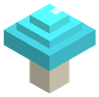
Champiñón Luminoso Coraza de Aleación Gravitacional
Coraza de Aleación Gravitacional Coraza de Electrum Solar
Coraza de Electrum Solar Coraza de Mithril de Escarcha
Coraza de Mithril de Escarcha Coraza de Plata Astral
Coraza de Plata Astral Coraza de Termo-Oricalco
Coraza de Termo-Oricalco Coraza de Titano-Obsidiana
Coraza de Titano-Obsidiana Coraza de Éter Cinético Resonante
Coraza de Éter Cinético Resonante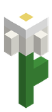
Edelweiss Polar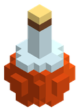
Elixir de Caminante de Lava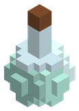
Elixir de Paso Ligero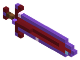
Espada Gravitacional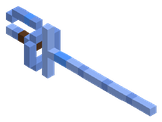
Estoque de Plata Astral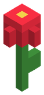
Flor de Vida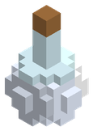
Frasco de Agua Bendita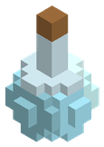
Frasco de Agua Glacial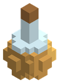
Frasco de Agua Termal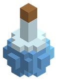
Frasco de Agua de Río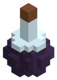
Frasco de Sigilo Espectral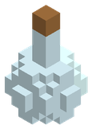
Frasco de Vidrio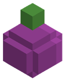
Fruto de Nopal Dulce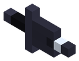
Garras de Titano-Obsidiana Grebas de Aleación Gravitacional
Grebas de Aleación Gravitacional Grebas de Electrum Solar
Grebas de Electrum Solar Grebas de Mithril de Escarcha
Grebas de Mithril de Escarcha Grebas de Plata Astral
Grebas de Plata Astral Grebas de Termo-Oricalco
Grebas de Termo-Oricalco Grebas de Titano-Obsidiana
Grebas de Titano-Obsidiana Grebas de Éter Cinético Resonante
Grebas de Éter Cinético Resonante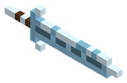
Hoja Rúnica de Mithril de Escarcha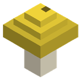
Hongo de Pólvora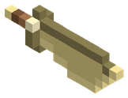
Kopis de Electrum Solar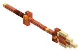
Lanza de Termo-Oricalco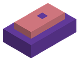
Lingote de Aleación Gravitacional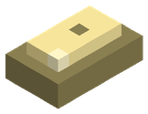
Lingote de Electrum Solar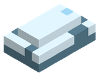
Lingote de Mithril de Escarcha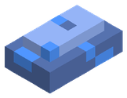
Lingote de Plata Astral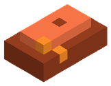
Lingote de Termo-Oricalco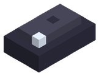
Lingote de Titano-Obsidiana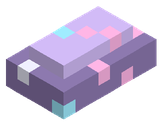
Lingote de Éter Cinético ResonanteLirio Astral del VacíoLoto Negro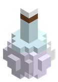
Lágrima del Demiurgo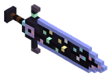
Mandoble de Éter ResonanteOrquídea de Maná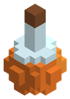
Poción de Fuego Interior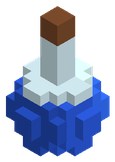
Poción de Maná Menor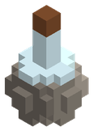
Poción de Piel de Piedra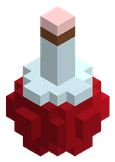
Poción de Salud Mayor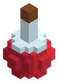
Poción de Salud Menor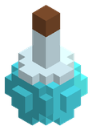
Poción de Visión Nocturna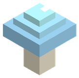
Seta de Escarcha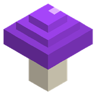
Seta de Fase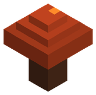
Trufa ÍgneaAlfa 0.5 En desarrollo · Alfa 0.5
En desarrollo ahora mismo: puede cambiar antes de salir. 7 objetos
Objetos
Las etiquetas de versión salen también en el Bestiario y en Objetos, y allí se puede filtrar por alfa. Lo que aún no ha salido puede cambiar.